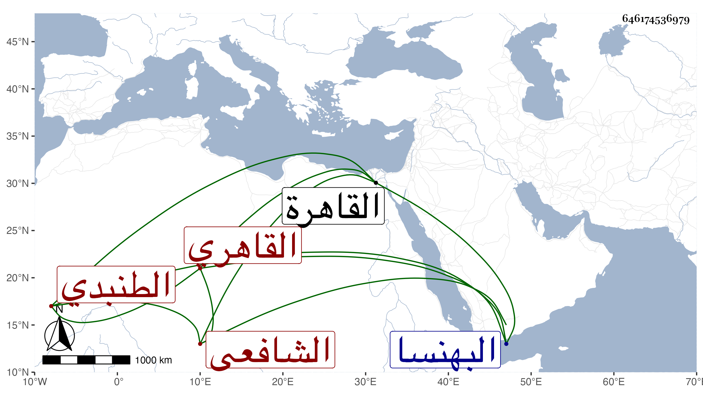

0902Sakhawi.DawLamic.ITO20230111-ara1.EIS1600.646174536979
Biography ID: 646174536979
182
محمد بن عبد الله بن حمود الشمس الطنبدي ثم القاهري الشافعي . ولد سنة خمس وسبعين وسبعمائة بطنبد بلد كبير من أعمال البهنسا من القاهرة وحفظ القرآن والعمدة والتنبيه والبيضاوي وألفية ابن ملك واخذ الفقه والعقليات عن قريبه البدر الطنبدي ولازمه حتى مات وكذا أخذ عن الشهاب بن العماد وقنبر العجمي والدميري والجلال البلقيني وآخرين وسمع العراقي والهيثمي ، وكان خيرا متقشفا مفيدا متواضعا لا يأنف الاستفادة ممن دونه . مات على ما تحرر قريب الستين .
